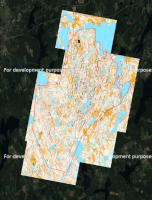

Valmistautuminen Jukolaan 2025
Jukola 2025 -alueen mapant-kartat satelliittikuvan päällä. Voit skrollailla ja katsoa satelliittikuvaa

Mikkelin alueen vanhoja karttoja
Jukola 2009 osuus 1
Jukola 2009 osuus 2
Jukola 2009 osuus 3
Jukola 2009 osuus 4
Jukola 2009 osuus 5
Jukola 2009 osuus 6
Jukola 2009 osuus 7
Venlojen viesti 2009 osuus 1
Venlojen viesti 2009 osuus 2
Venlojen viesti 2009 osuus 3
Venlojen viesti 2009 osuus 4
Vanha kartta 1
Vanha kartta 1
Vanha kartta 1
Vanha kartta 1
Vanha kartta 1
Vanha kartta 1
Vanha kartta 1
Vanha kartta 1
Vanha kartta 1
Vanha kartta 1
Vanha kartta 1
Vanha kartta 1
Linkkejä harjoitteluun ja kertaamiseen kotisohvalla
Satelliitti- ja ilmakuvat (katso eri linkkejä joissa kuvat on eri aikoina otettuja)
https://app.karttaselain.fi/ (Maanmittauslaitoksen tuoreet ja tarkat ilmakuvat kun laitat rastin kohtaan "Ilmakuvat")
https://maps.google.com/
https://www.bing.com/maps?cp=63.149964%7E23.044574&lvl=14.3&style=a&forcev8=1
Kartan symbolit
https://suunnistus.fi/perustaidot/karttamerkit/
https://www.suunnistusliitto.fi/system/wp-content/uploads/2014/08/Harraste_Karttamerkit_ja_kuvat.pdf
https://www.suunnistusliitto.fi/system/wp-content/uploads/2020/01/ISOM2017-2_FI_2020-01-15_suomennos.pdf
https://suunnistusvinkit.wordpress.com/2020/03/17/karttasymbolit-osa-1-maanpinnan-muodot/
https://suunnistusvinkit.wordpress.com/2020/03/23/karttasymbolit-osa-2-kalliot-ja-kivet/
https://suunnistusvinkit.wordpress.com/2019/12/15/3-karttamerkit/
https://www.suunnistusliitto.fi/system/wp-content/uploads/2019/03/Rastinmaaritteet-2018.pdf
Ohjeita
Better orienteering
Youtube - Kuntoilija
Suunnistusliitto - Taitoa